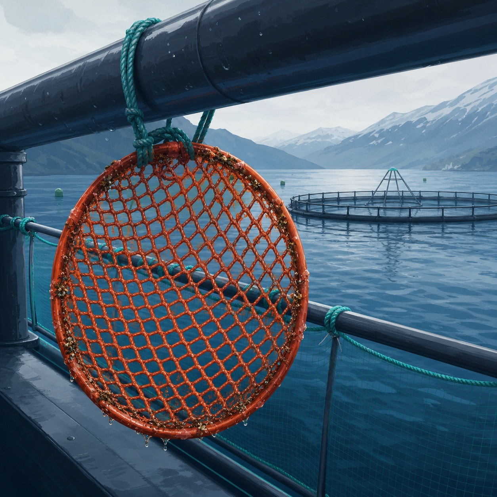

Impregnación de redes de alta resistencia que asegura protección óptima contra incrustación. También protege contra UV y ayuda a facilitar la limpieza y evitar la desecación.
La sustancia activa es un granulado nuevo que contiene partículas de cobre de calidad muy pura — que cumple los requisitos para uso en cultivo orgánico.
El óxido de dicobre se considera el biocida más seguro para impregnación de redes, tanto para el usuario como para el ambiente.
Salud, ambiente y seguridad. Netwax E8 Greenline cumple los requisitos de salud, ambiente y seguridad para peces y personas, y está aprobado bajo regulación química UE hasta 2033.
Le enviaremos la ficha de seguridad y una cotización actualizada según su instalación y volumen.